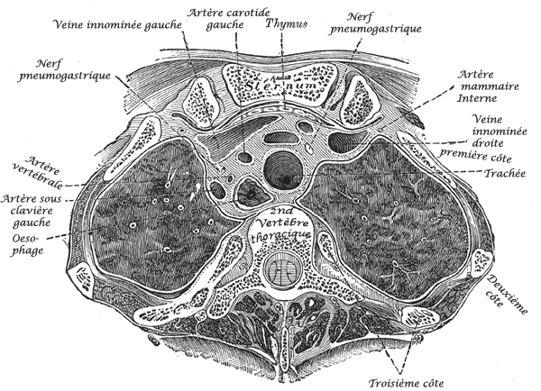
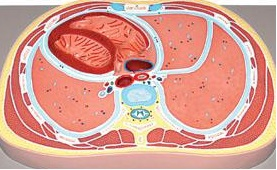

Le cœur ou myocarde, est un muscle creux strie comportant 4 cavites (2 oreillettes et 2 ventricules) qui se contracte automatiquement pour propulser le sang dans les vaisseaux.
Il se
situe dans le thorax, entre les deux poumons, au-dessus du diaphragme.
Il se trouve dans la partie mediastinale anterieure (mediastin = region
mediane du thorax situe entre les deux poumons, le sternum et la
colonne vertebrale)


Configuration externe du cœurLe coeur se presente sous le format d’une pyramide triangulaire, il est ferme et rouge. Il pese, chez l’homme 300 g et chez la femme 270 g.

La base est posterieure et droite, formee par les 2 oreillettes separees entre-elles par le sillon inter-auriculaire.
Le sommetLe sommet est anterieur (vers l’avant) ce qui permet de percevoir les battements en regard du 5eme espace intercostal gauche.
La face anterieureLa face anterieure est separee en 2 parties par le sillon auriculo-ventriculaire : ces 2 parties sont les oreillettes en arriere et les ventricules en avant.
De la partie moyenne du sillon auriculo-ventriculaire emergent 2 enormes vaisseaux : l’aorte et l’artere pulmonaire.
En arriere du sillon auriculo-ventriculaire, un sillon vertical marque la separation de l’oreillette droite et de l’oreillette gauche : le sillon inter-auriculaire.
En avant du sillon auriculo-ventriculaire, un sillon longitudinal : le sillon inter-ventriculaire, marque la separation entre les ventricules droit et gauche.
La face inferieureLa face inferieure repose sur le diaphragme. Elle est egalement divisee par le sillon auriculo-ventriculaire en 2 parties : ces 2 parties sont essentiellement formees sur la face inferieure par l’oreillette droite et le ventricule droit.
La face posterieureLa face posterieure est egalement divisee par le sillon auriculo-ventriculaire en 2 parties : en arriere, se trouve l’oreillette gauche, en avant, les deux ventricules separes par le sillon inter-ventriculaire qui se prolonge sur la face posterieure du cœur.

Chaque oreillette communique avec le
ventricule sous-jacent par un
orifice, l’orifice auriculo-ventriculaire.
Les oreillettes sont separees par la cloison inter-auriculaire, les ventricules par la cloison inter-ventriculaire. Le sang ne se melange pas entre les cavites droites et les cavites gauches.

L'oreillette droite est une cavite lisse, etiree a ses 2 extremites (inferieure et superieure) oe s’abouche respectivement la veine cave inferieure et la veine cave superieure a l’extremite inferieure et superieure.
La veine cave superieure s’abouche directement a l’oreillette droite par contre la veine cave inferieure, elle, presente une valvule, la valvule d’Eustache.
Dans l’oreillette droite, il existe un renflement appele nœud de KHEIT et FLACK.
La partie inferieure de l’oreillette droite presente un orifice compose d’un anneau fibreux sur lequel s’insere la valve tricuspide.
Ventricule droitLe ventricule droit se presente sous la forme d’un tronc et est accole au ventricule gauche. Il possede des colonnes charnues ou bandelettes musculaires. Ces piliers et ces cordages forment le systeme d’amarrage de la valve tricuspide.
La valve tricuspide se compose de 3 feuillets (un feuillet septal, un feuillet anterieur, un feuillet inferieur). La valve tricuspide ressort par l’orifice de l’artere pulmonaire.
Les cavites gauches
L'oreillette gaucheL’oreillette gauche reeoit les 4 veines pulmonaires (2 veines pulmonaires droites superieures et inferieures et 2 veines pulmonaires gauches superieures et inferieures).
L’oreillette gauche communique avec le ventricule gauche par la valve mitrale, elle est aussi a la paroi ventriculaire par 2 feuillets, des piliers et des cordages de la mitrale qui empeche le sang de refluer.
Le ventricule gaucheLe ventricule gauche se presente sous la forme cylindrique.
Il represente l’essentiel de la masse musculaire du cœur et il communique avec l’aorte par l’orifice aortique.
La valve sigmoede aortique, empechent le sang de refluer de l’aorte vers le ventricule gauche. C'est la sortie du ventricule gauche.
La valve mitrale est l'entree du ventricule gauche.
Les vaisseaux du cœur

Les arteres coronaires irriguent le cœur et se divisent e partir de leur origine en plusieurs branches. Elles partent de l’ostium coronaire a la sortie du ventricule gauche (depart des vaisseaux coronaires) et les vaisseaux coronaires partent des valvules sigmoedes.
Il est plus grave d’avoir une atteinte sur la coronaire gauche que sur la coronaire droite.
Le coeur gauche est irrigue principalement par la coronaire gauche, elle comprend un tronc commun qui se divise en deux parties :
- L’inter-ventriculaire anterieure (IVA).
- La circonflexe.
Le coeur droit est principalement irrigue par la coronaire droite qui se divise en deux :
- L’artere retro-ventriculaire.
- L’artere inter-ventriculaire posterieure (IVP).
Les veines coronaires
Les veines coronaires suivent le trajet des arteres et elles aboutissent dans le sinus coronaire et arrivent dans l’oreillette droite.
Voir aussi :